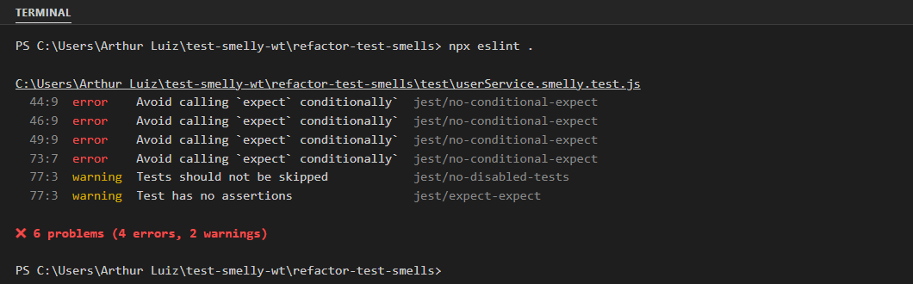

Arthur Luiz Alves Soares
Repositório: https://github.com/ALuiz19/test-smelly
Analisei o arquivo test/userService.smelly.test.js (o enunciado fala em __tests__/, mas no repositório a pasta é test/). Encontrei seis smells: Eager Test com Assertion Roulette, Conditional Test Logic, Fragile Test / Sensitive Equality, Exception Handling, Ignored/Empty Test e General Fixture (anotações em docs/analise-manual.md). Detalho os três mais graves.
for (const user of todosOsUsuarios) {
const resultado = userService.deactivateUser(user.id);
if (!user.isAdmin) {
expect(resultado).toBe(true);
...
} else {
expect(resultado).toBe(false);
}
}Por que é um mau cheiro: com laço e desvio, o caminho executado depende dos dados, e o teste mistura dois comportamentos (usuário comum e administrador). Risco: parte dos expect pode nunca rodar. Exemplo concreto: se createUser passar a ignorar o parâmetro isAdmin, o admin cai no ramo do usuário comum, o else nunca executa e o teste continua verde. Quando falha, não fica claro qual iteração quebrou.
try {
userService.createUser('Menor', 'menor@email.com', 17);
} catch (e) {
expect(e.message).toBe('O usuário deve ser maior de idade.');
}Por que é um mau cheiro: o único expect está dentro do catch. Se nenhuma exceção for lançada, o teste termina sem asserção nenhuma e fica verde. Risco: se alguém apagar a validação de idade, a suíte não percebe. No trabalho anterior, de teste de mutação, esse é exatamente o mutante que sobreviveria: remover o if (idade < 18) não derruba nenhum teste.
const linhaEsperada = `ID: ${usuario1.id}, Nome: Alice, Status: ativo\n`;
expect(relatorio).toContain(linhaEsperada);
expect(relatorio.startsWith('--- Relatório de Usuários ---')).toBe(true);Por que é um mau cheiro: o teste compara a linha formatada exata e o cabeçalho literal, ou seja, verifica a apresentação e não o conteúdo. Risco: qualquer ajuste de formatação quebra o teste com o comportamento correto, e o próprio código avisa que "o formato do relatório pode mudar". Falhas falsas frequentes tiram a confiança na suíte.
Observação extra: createUser valida com !idade, então idade 0 é tratada como campo ausente, e não como menor de idade. Não alterei o código de produção, mas evitei esse caso nos testes.
Criei test/userService.clean.test.js sem alterar o original, com um describe por método (createUser, getUserById, deactivateUser e generateUserReport) e o mesmo beforeEach (instância nova e base limpa).
Antes (comentários do original omitidos)
test('deve desativar usuários se eles não forem administradores', () => {
const usuarioComum = userService.createUser('Comum', 'comum@teste.com', 30);
const usuarioAdmin = userService.createUser('Admin', 'admin@teste.com', 40, true);
const todosOsUsuarios = [usuarioComum, usuarioAdmin];
for (const user of todosOsUsuarios) {
const resultado = userService.deactivateUser(user.id);
if (!user.isAdmin) {
expect(resultado).toBe(true);
const usuarioAtualizado = userService.getUserById(user.id);
expect(usuarioAtualizado.status).toBe('inativo');
} else {
expect(resultado).toBe(false);
}
}
});Depois
describe('deactivateUser', () => {
test('retorna true ao desativar um usuário comum', () => {
// Arrange
const comum = userService.createUser('Comum', 'comum@teste.com', 30);
// Act
const resultado = userService.deactivateUser(comum.id);
// Assert
expect(resultado).toBe(true);
});
test('altera o status do usuário comum para "inativo"', () => {
// Arrange
const comum = userService.createUser('Comum', 'comum@teste.com', 30);
// Act
userService.deactivateUser(comum.id);
// Assert
expect(userService.getUserById(comum.id).status).toBe('inativo');
});
test('retorna false ao tentar desativar um administrador', () => {
// Arrange
const admin = userService.createUser('Admin', 'admin@teste.com', 40, true);
// Act
const resultado = userService.deactivateUser(admin.id);
// Assert
expect(resultado).toBe(false);
});
// + "mantém o administrador com status ativo" e "retorna false quando o id não existe"
});Antes (try/catch)
test('deve falhar ao criar usuário menor de idade',
() => {
try {
userService.createUser('Menor',
'menor@email.com', 17);
} catch (e) {
expect(e.message)
.toBe('O usuário deve ser maior de idade.');
}
});Depois (toThrow)
test('lança erro quando o usuário é menor de idade',
() => {
// Arrange
const idadeMenor = 17;
// Act
const acao = () => userService.createUser('Menor',
'menor@teste.com', idadeMenor);
// Assert
expect(acao)
.toThrow('O usuário deve ser maior de idade.');
});As principais decisões foram:
// Arrange, // Act e // Assert, um comportamento e um único Act por teste. O antigo "criar e buscar" foi separado.for e if: cada caminho do original virou um teste próprio, então todo expect sempre roda.expect(acao).toThrow(...): o teste falha se a exceção não for lançada. Os campos obrigatórios usam test.each, um caso por campo.getUserById, e não pela referência devolvida por createUser.toContain com título, id, nome e status, em vez da linha formatada exata.test.skip virou um teste real da base vazia ("Nenhum usuário cadastrado").< por <=).A suíte limpa ficou com 22 testes. Para conferir o ganho, fiz um teste de mutação manual: troquei if (idade < 18) por if (false) em src/userService.js. A suíte original continuou toda verde, e a limpa falhou no teste "lança erro quando o usuário é menor de idade". Depois desfiz a alteração.
Usei o ESLint 8.57.1 com o eslint-plugin-jest 28. Escolhi a versão 8 porque o enunciado pede o arquivo .eslintrc.json, formato que o ESLint 9 ignora por padrão e o ESLint 10 removeu. A primeira execução, feita antes de criar o arquivo limpo, está abaixo.

Foram 6 problemas: 4 erros jest/no-conditional-expect (linhas 44, 46 e 49, no if/else, e 73, no catch) e 2 avisos na linha 77 (jest/no-disabled-tests e jest/expect-expect, pelo test.skip vazio). A ferramenta automatiza a detecção do Conditional Test Logic, do Exception Handling e do Ignored/Empty Test, que têm forma sintática reconhecível. Eager Test, Assertion Roulette, Sensitive Equality e General Fixture não aparecem, porque dependem de entender a intenção do teste.
Na validação final, o arquivo limpo passou com zero erros e zero avisos (npm run lint:clean, com --max-warnings 0). Os erros do arquivo original continuam no npm run lint, o que é esperado, porque ele não podia ser alterado.
Um teste pode passar e mesmo assim não proteger nada: o try/catch original ficava verde com ou sem a validação de idade. Depois da refatoração, cada teste verifica um comportamento, sempre executa as suas asserções e falha pelo motivo certo.
Testes limpos e análise estática, de preferência rodando no CI a cada push, formam uma rede de proteção contínua: expect condicional e testes desativados são barrados antes de chegar ao main. Isso se liga ao teste de mutação do trabalho anterior, porque os smells encontrados são justamente os que deixam mutantes vivos, e os casos-limite adicionados servem para matá-los. O lint previne a forma ruim do teste; a mutação mede se ele realmente detecta defeitos.
A limitação é que a ferramenta só enxerga a sintaxe: dos seis smells, pegou três. O ESLint não substitui a revisão do código de teste, mas tira dela o trabalho repetitivo.